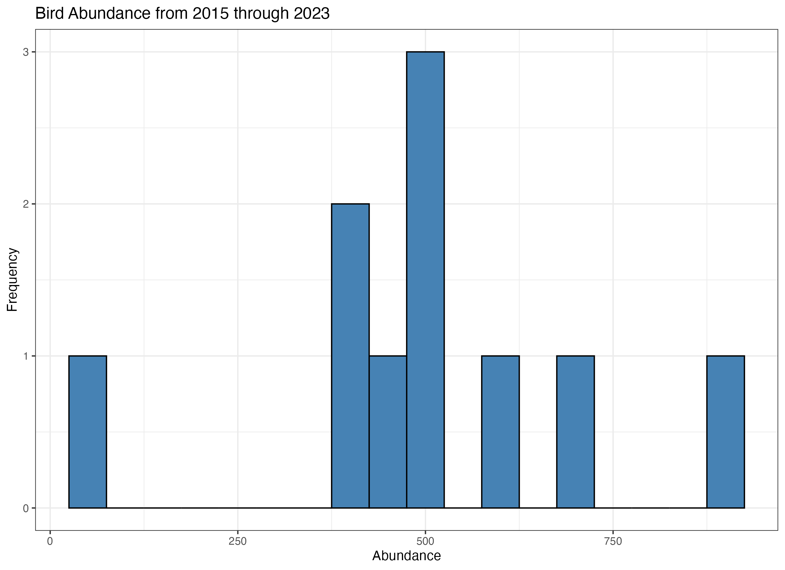
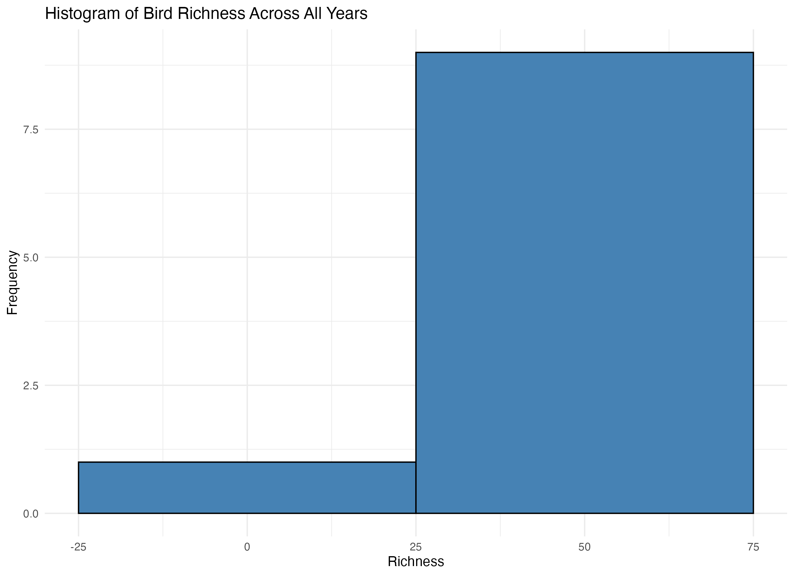

Find main file on desktop and familiarize with contents
folders <- list.files(path = "~/Desktop/NEON_count-landbird", pattern = "-2025", full.names = FALSE)
Prepare to run loop:
Create empty list to hold the files I would like to work with
countdata_list <- list()
Create empty data frame to hold the values generated in loop
stats <- data.frame(
filename = character(),
abundance = numeric(),
richness = numeric(),
year = numeric(),
stringsAsFactors = FALSE
)Create empty data frame for regression model statistics
regression_summary <- data.frame(
coef_abundance = numeric(),
intercept = numeric(),
r_squared = numeric(),
p_value_abundance = numeric(),
stringsAsFactors = FALSE
)Check packages out of the library
library(devtools) library(upscaler)
Process Data
for (i in folders) {
files <- list.files(
path = file.path("~/Desktop/NEON_count-landbird", i),
pattern = "countdata",
full.names = TRUE
)
print(files)
for (j in files) {
count_data <- read.csv(j)
countdata_list[[j]] <- count_data
# Extract the filename
file_name <- basename(j)
# Extract year from filename
year_match <- regmatches(file_name, regexpr("20[0-9]{2}", file_name))
year <- as.numeric(year_match)
# Clean
na.omit(j)
# Calculate abundance and richness
abundance <- sum(count_data$clusterSize, na.rm = TRUE)
richness <- length(unique(count_data$scientificName))
# Add row to stats data frame
stats <- rbind(stats, data.frame(
filename = file_name,
abundance = abundance,
richness = richness,
year = year,
stringsAsFactors = FALSE
))
}
}Run functions for regression and histograms
regression_summary <- regression_model(stats)
create_histograms(stats)
Stats
| File Name | Abundance | Richness | Year |
| NEON.D01.BART.DP1.10003.001.brd_countdata.2015-06.basic.20241118T065914Z.csv | 459 | 40 | 2015 |
| NEON.D01.BART.DP1.10003.001.brd_countdata.2016-06.basic.20241118T142515Z.csv | 696 | 39 | 2016 |
| NEON.D01.BART.DP1.10003.001.brd_countdata.2017-06.basic.20241118T043125Z.csv | 411 | 35 | 2017 |
NEON.D01.BART.DP1.10003.001.brd_countdata.2018-06.basic.20241118T105926Z.csv |
515 | 37 | 2018 |
| NEON.D01.BART.DP1.10003.001.brd_countdata.2019-06.basic.20241118T064156Z.csv | 410 | 44 | 2019 |
| NEON.D01.BART.DP1.10003.001.brd_countdata.2020-06.basic.20241118T184512Z.csv | 489 | 46 | 2020 |
| NEON.D01.BART.DP1.10003.001.brd_countdata.2020-07.basic.20241118T010504Z.csv | 54 | 18 | 2020 |
| NEON.D01.BART.DP1.10003.001.brd_countdata.2021-06.basic.20241118T105538Z.csv | 920 | 50 | 2021 |
| NEON.D01.BART.DP1.10003.001.brd_countdata.2022-06.basic.20241118T033934Z.csv | 592 | 39 | 2022 |
| NEON.D01.BART.DP1.10003.001.brd_countdata.2023-06.basic.20241118T091043Z.csv | 523 | 42 | 2023 |
Regression Summary
| coef_abundance | intercept | r_squared | p_value_abundance | n_obs |
| 0.03137201 | 23.09753 | 0.6506631 | 0.004808103 | 10 |
Histograms

